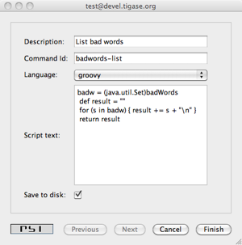

Scripting support is a basic API built-in to Tigase server and automatically available to any component at no extra resource cost. This framework, however, can only access existing component variables which are inherited by your code from parent classes. It can not access any data or any structures you added in your component. A little effort is needed to expose some of your data to the scripting API.
This guide shows how to extend existing scripting API with your component specific data structures.
Integrating your component implementation with the scripting API is as simple as the code below:
private static final String BAD_WORDS_VAR = "badWords";
private static final String WHITE_LIST_VAR = "whiteList";
@Override
public void initBindings(Bindings binds) {
super.initBindings(binds);
binds.put(BAD_WORDS_VAR, badWords);
binds.put(WHITE_LIST_VAR, whiteList);
}This way you expose two the component variables: badWords and whiteList to scripts under names the same names - two defined constants. You could use different names of course but it is always a good idea to keep things straightforward, hence we use the same variable names in the component and in the script.
Almost done, almost… In our old implementation these two variables are Java arrays of String*s. Therefore we can only change their elements but we can not add or remove elements from these structures inside the script. This is not very practical and it puts some serious limits on the script’s code. To overcome this problem I have changed the test component code to keep bad words and whitelist in *java.util.Set collection. This gives us enough flexibility to manipulate data.
As our component is now ready to cooperate with the scripting API, I will demonstrate now how to add remove or change elements of these collections using a script and ad-hoc commands.

First, browse the server service discovery and double click on the test component. If you use Psi client this should bring to you a new window with ad-hoc commands list. Other clients may present available ad-hoc commands differently.
The screenshot below shows how this may look. You have to provide some description for the script and an ID string. We use Groovy in this guide but you can as well use any different scripting language.

Please refer to the Tigase scripting documentation for all the details how to add support for more languages. From the Tigase API point of view it all looks the same. You have to select a proper language from the pull-down list on windows shown on the right. If your preferred language is not on the list, it means it is not installed properly and Tigase is unable to detect it.
The script to pull a list of current bad words can be as simple as the following Groovy code:
def badw = (java.util.Set)badWords
def result = ""
for (s in badw) { result += s + "\n" }
return resultAs you see from the code, you have to reference your component variables to a variables in your script to make sure a correct type is used. The rest is very simple and is a pure scripting language stuff.
Load the script on to the server and execute it. You should receive a new window with a list of all bad words currently used by the spam filter.
Below is another simple script which allows updating (adding/removing) bad words from the list.
import tigase.server.Command
import tigase.server.Packet
def WORDS_LIST_KEY = "words-list"
def OPERATION_KEY = "operation"
def REMOVE = "Remove"
def ADD = "Add"
def OPERATIONS = [ADD, REMOVE]
def badw = (java.util.Set)badWords
def Packet p = (Packet)packet
def words = Command.getFieldValue(p, WORDS_LIST_KEY)
def operation = Command.getFieldValue(p, OPERATION_KEY)
if (words == null) {
// No data to process, let's ask user to provide
// a list of words
def res = (Packet)p.commandResult(Command.DataType.form)
Command.addFieldValue(res, WORDS_LIST_KEY, "", "Bad words list")
Command.addFieldValue(res, OPERATION_KEY, ADD, "Operation",
(String[])OPERATIONS, (String[])OPERATIONS)
return res
}
def words_list = words.tokenize(",")
if (operation == ADD) {
words_list.each { badw.add(it.trim()) }
return "Words have been added."
}
if (operation == REMOVE) {
words_list.each { badw.remove(it.trim()) }
return "Words have been removed."
}
return "Unknown operation: " + operationThese two scripts are just the beginning. The possibilities are endless and with the simple a few lines of code in your test component you can then extend your application at runtime with scripts doing various things; you can reload scripts, add and remove them, extending and modifying functionality as you need. No need to restart the server, no need to recompile the code and you can use whatever scripting language you like.
Of course, scripts for whitelist modifications would look exactly the same and it doesn’t make sense to attach them here.
Here is a complete code of the test component with the new method described at the beginning and data structures changed from array of String*s to Java *Set:
import java.util.Arrays;
import java.util.Collections;
import java.util.Map;
import java.util.Set;
import java.util.concurrent.CopyOnWriteArraySet;
import java.util.logging.Level;
import java.util.logging.Logger;
import javax.script.Bindings;
import tigase.server.AbstractMessageReceiver;
import tigase.server.Packet;
import tigase.stats.StatisticsList;
import tigase.util.JIDUtils;
import tigase.xmpp.StanzaType;
public class TestComponent extends AbstractMessageReceiver {
private static final Logger log =
Logger.getLogger(TestComponent.class.getName());
private static final String BAD_WORDS_KEY = "bad-words";
private static final String WHITELIST_KEY = "white-list";
private static final String PREPEND_TEXT_KEY = "log-prepend";
private static final String SECURE_LOGGING_KEY = "secure-logging";
private static final String ABUSE_ADDRESS_KEY = "abuse-address";
private static final String NOTIFICATION_FREQ_KEY = "notification-freq";
private static final String BAD_WORDS_VAR = "badWords";
private static final String WHITE_LIST_VAR = "whiteList";
private static final String[] INITIAL_BAD_WORDS = {"word1", "word2", "word3"};
private static final String[] INITIAL_WHITE_LIST = {"admin@localhost"};
/**
* This might be changed in one threads while it is iterated in
* processPacket(...) in another thread. We expect that changes are very rare
* and small, most of operations are just iterations.
*/
private Set<String> badWords = new CopyOnWriteArraySet<String>();
/**
* This might be changed in one threads while it is iterated in
* processPacket(...) in another thread. We expect that changes are very rare
* and small, most of operations are just contains(...).
*/
private Set<String> whiteList = new ConcurrentSkipListSet<String>();
private String prependText = "Spam detected: ";
private String abuseAddress = "abuse@locahost";
private int notificationFrequency = 10;
private int delayCounter = 0;
private boolean secureLogging = false;
private long spamCounter = 0;
private long totalSpamCounter = 0;
private long messagesCounter = 0;
@Override
public void processPacket(Packet packet) {
// Is this packet a message?
if ("message" == packet.getElemName()) {
updateServiceDiscoveryItem(getName(), "messages",
"Messages processed: [" + (++messagesCounter) + "]", true);
String from = JIDUtils.getNodeID(packet.getElemFrom());
// Is sender on the whitelist?
if (!whiteList.contains(from)) {
// The sender is not on whitelist so let's check the content
String body = packet.getElemCData("/message/body");
if (body != null && !body.isEmpty()) {
body = body.toLowerCase();
for (String word : badWords) {
if (body.contains(word)) {
log.finest(prependText + packet.toString(secureLogging));
++spamCounter;
updateServiceDiscoveryItem(getName(), "spam", "Spam caught: [" +
(++totalSpamCounter) + "]", true);
return;
}
}
}
}
}
// Not a SPAM, return it for further processing
Packet result = packet.swapElemFromTo();
addOutPacket(result);
}
@Override
public int processingThreads() {
return Runtime.getRuntime().availableProcessors();
}
@Override
public int hashCodeForPacket(Packet packet) {
if (packet.getElemTo() != null) {
return packet.getElemTo().hashCode();
}
// This should not happen, every packet must have a destination
// address, but maybe our SPAM checker is used for checking
// strange kind of packets too....
if (packet.getElemFrom() != null) {
return packet.getElemFrom().hashCode();
}
// If this really happens on your system you should look carefully
// at packets arriving to your component and decide a better way
// to calculate hashCode
return 1;
}
@Override
public Map<String, Object> getDefaults(Map<String, Object> params) {
Map<String, Object> defs = super.getDefaults(params);
Collections.addAll(badWords, INITIAL_BAD_WORDS);
Collections.addAll(whiteList, INITIAL_WHITE_LIST);
defs.put(BAD_WORDS_KEY, INITIAL_BAD_WORDS);
defs.put(WHITELIST_KEY, INITIAL_WHITE_LIST);
defs.put(PREPEND_TEXT_KEY, prependText);
defs.put(SECURE_LOGGING_KEY, secureLogging);
defs.put(ABUSE_ADDRESS_KEY, abuseAddress);
defs.put(NOTIFICATION_FREQ_KEY, notificationFrequency);
return defs;
}
@Override
public void setProperties(Map<String, Object> props) {
super.setProperties(props);
Collections.addAll(badWords, (String[])props.get(BAD_WORDS_KEY));
Collections.addAll(whiteList, (String[])props.get(WHITELIST_KEY));
prependText = (String)props.get(PREPEND_TEXT_KEY);
secureLogging = (Boolean)props.get(SECURE_LOGGING_KEY);
abuseAddress = (String)props.get(ABUSE_ADDRESS_KEY);
notificationFrequency = (Integer)props.get(NOTIFICATION_FREQ_KEY);
updateServiceDiscoveryItem(getName(), null, getDiscoDescription(),
"automation", "spam-filtering", true,
"tigase:x:spam-filter", "tigase:x:spam-reporting");
}
@Override
public synchronized void everyMinute() {
super.everyMinute();
if ((++delayCounter) >= notificationFrequency) {
addOutPacket(Packet.getMessage(abuseAddress, getComponentId(),
StanzaType.chat, "Detected spam messages: " + spamCounter,
"Spam counter", null, newPacketId("spam-")));
delayCounter = 0;
spamCounter = 0;
}
}
@Override
public String getDiscoDescription() {
return "Spam filtering";
}
@Override
public String getDiscoCategoryType() {
return "spam";
}
@Override
public void getStatistics(StatisticsList list) {
super.getStatistics(list);
list.add(getName(), "Spam messages found", totalSpamCounter,
Level.INFO);
list.add(getName(), "All messages processed", messagesCounter,
Level.FINE);
if (list.checkLevel(Level.FINEST)) {
// Some very expensive statistics generation code...
}
}
@Override
public void initBindings(Bindings binds) {
super.initBindings(binds);
binds.put(BAD_WORDS_VAR, badWords);
binds.put(WHITE_LIST_VAR, whiteList);
}
}